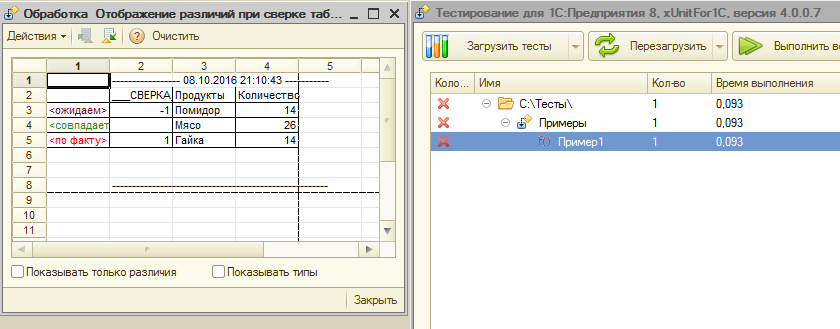
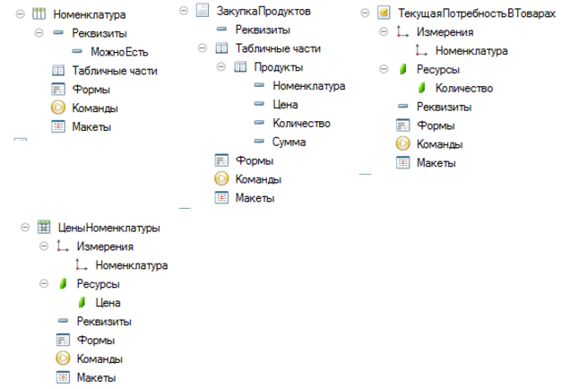
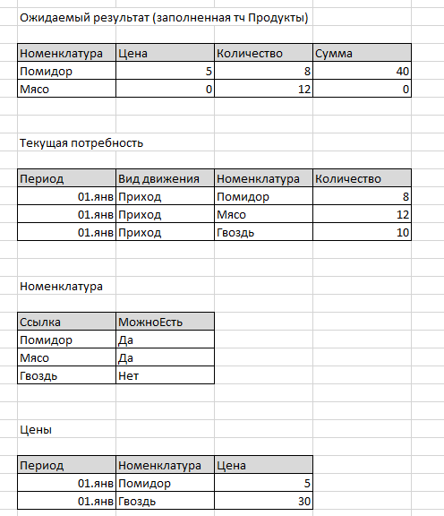
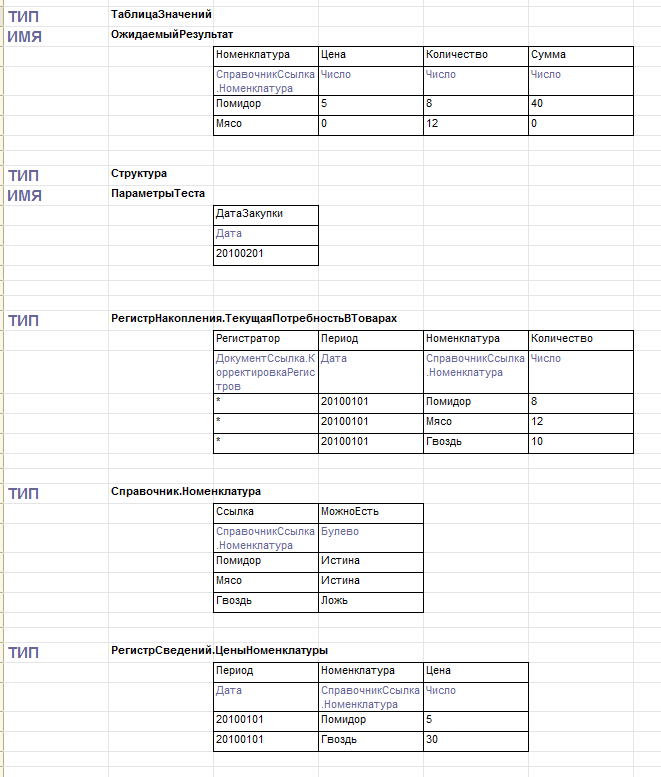
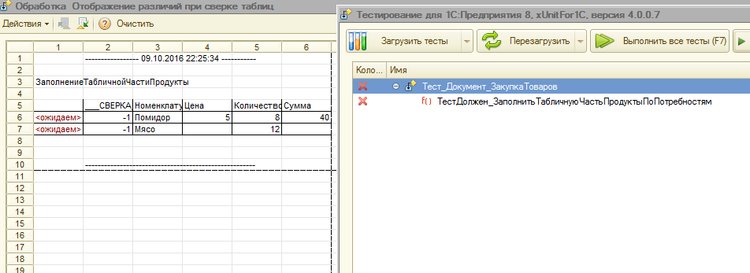
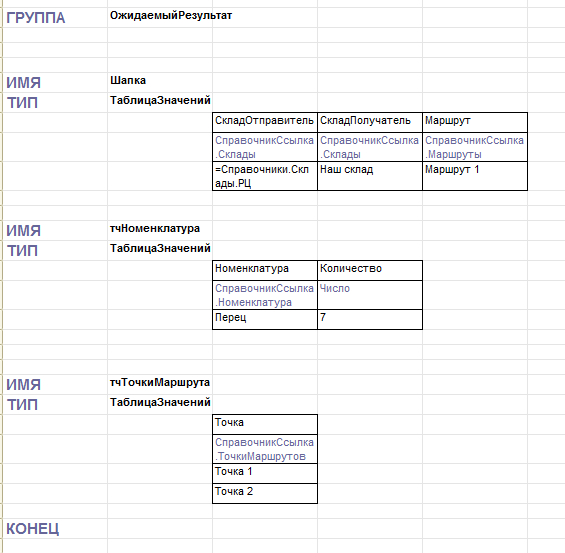
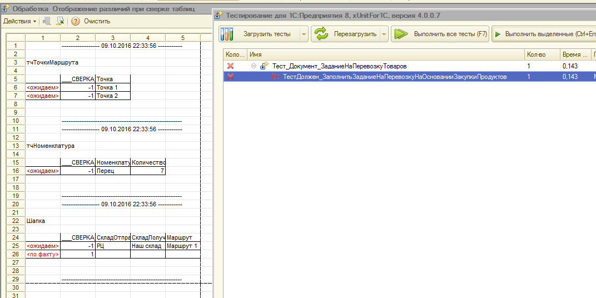
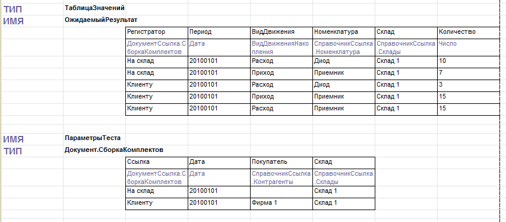
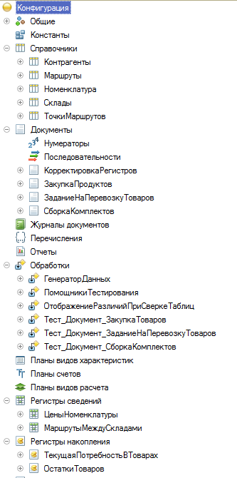

Данная статья про инструмент, который я использую уже продолжительное время, и который, по моему мнению, заслуживает внимания. Также опишу несколько примеров его применения.
Постановка задачи
Пусть есть некоторый алгоритм, результат которого можно представить в виде таблицы значений. Также имеем тест, который сравнивает результат алгоритма с таблицей эталоном. Если результат совпадает с ожидаемым, то никаких дополнительных действий не требуется. Но в случае отличия, необходим способ, позволяющий быстро найти расхождение двух таблиц. Можно конечно поставить точку останова в отладчике, но тогда обе таблицы придется сравнивать поочередно. Но это плохой способ. Особенно это понимаешь, когда “покраснел” не один, а несколько тестов. Каждый раз переключаться в отладчик, и искать отличия, очень трудоемко.
Решение
Для решения понадобится алгоритм, который не просто проверяет равенство двух таблиц, но и выдает нам их различия. Суть этого алгоритма описана мной в одной из предыдущих публикаций. В двух словах: на вход сверочной процедуры подаются две таблицы, после сверки получается одна таблица с дополнительной колонкой, с помощью которой можно понять, какие строки совпадают в обеих таблицах, какие присутствуют только в первой, а какие только во второй.
В случае, когда различий не найдено, никаких действий не выполняем. А если таблицы отличаются, то отображаем результат сверки на дополнительной форме. То есть прогоняем тесты как обычно. Если какие-то “покраснели”, то открываем дополнительную обработку, прогоняем нужный тест, и видим в открытой обработке различия, не переключаясь в конфигуратор.

На картинке представлен тестовый пример. На нем видно, что одна строка совпадает, а другая строка различается по колонке Продукты. Также добавлена служебная колонка __СВЕРКА__, по которой мы определяем наличие строки в эталоне и в результате. Код теста, приведенного на рисунке выглядит примерно так:
Процедура ТестДолжен_ПродемонстрироватьОтображениеРазличийДвухТаблиц() Экспорт
ИмяМакета = "Пример1"; // по которому будут сгенерированы тестовые данные
ТестовыеДанные = ТестовыеДанные(ИмяМакета);
План = ТестовыеДанные.ОжидаемыйРезультат;
Факт = ТестовыеДанные
.ПараметрыТеста
.ПодопытныйДокумент
.ПолучитьОбъект()
.ПолучитьТаблицуИзОченьСложногоЗапроса(“какие-то параметры”);
Помощники().ПроверитьРавенствоТаблиц(План, Факт, ИмяМакета);
КонецПроцедуры
Хочу обратить внимание, что сам тест не содержит никаких дополнительных действий. Результат сверки выдается из процедуры ПроверитьРавенствоТаблиц()
Пример 1. Проверка функции по заполнению табличной части подопытного объекта
Задача: в форме документа Закупка продуктов реализовать кнопку Заполнить, при нажатии на которую заполнять табличную часть Продукты остатками из регистра накопления Текущая потребность в товарах на дату документа. При этом необходимо брать только номенклатуру, которая является продуктом (МожноЕсть = Истина). Цену необходимо подтянуть из регистра сведений Цены номенклатуры на дату закупки (дату документа).

Тестовые данные я обычно сначала описываю на листке бумаги. В данном случае они будут выглядеть например, так

Добавили номенклатуру Гвоздь в регистр Текущая потребность, которая не должна попасть в результирующий запрос, т.к. не является продуктом. Номенклатуры Мясо нет в регистре цен, она должна попасть в результат с пустой ценой.
Создадим внешнюю обработку, в которой будем описывать тестовые сценарии. Назовем ее например так: Тесты_Документ_ЗакупкаПродуктов, и будем в нее помещать все тестовые случаи, связанные с нашим документом. Создадим в ней табличный макет ЗаполнениеТабличнойЧастиПродуктыИзПотребностей и перенесем в него данные из таблиц, описанных ранее.

Я стараюсь все параметры прописывать в макете, поэтому добавил структуру ПараметрыТеста с ключом ДатаЗакупки.
Остатки в регистр ТекущаяПотребностьВТоварах можно добавить любым документом, я обычно использую в таком случае КорректировкаРегистров (или его аналог, в зависимости от конфигурации).
Далее описываем тестовый случай. Именно в этот момент придумываем, как назовем функцию, которую будем вызывать, но которая пока еще не объявлена.
Процедура ТестДолжен_ЗаполнитьТабличнуюЧастьПродуктыПоПотребностям() Экспорт
ИмяМакета = "ЗаполнениеТабличнойЧастиПродукты";
ТестовыеДанные = ТестовыеДанные(ИмяМакета);
План = ТестовыеДанные.ОжидаемыйРезультат;
Факт = Документы
.ЗакупкаПродуктов
.ПолучитьТабличнуюЧастьПродуктыПоПотребностямНаДатуЗакупки
(
ТестовыеДанные.ПараметрыТеста.ДатаЗакупки
);
Помощники().ПроверитьРавенствоТаблиц(План, Факт, ИмяМакета);
КонецПроцедуры
В модуле менеджера документа создаем эту функцию
Функция ПолучитьТабличнуюЧастьПродуктыПоПотребностямНаДатуЗакупки(ДатаЗакупки) Экспорт
Возврат Новый ТаблицаЗначений;
КонецФункции
Запускаем тест, и убеждаемся, что он падает. При этом наблюдаем такую картину

Далее заполняем нашу функцию бизнес-логикой, добиваясь, чтобы тест стал “зеленым“.
После этого добавляем кнопку на форму, организуем вызов описанной нами функции из обработчика нажатия на эту кнопку, проверяем один раз интерактивно, что не падает критическая ошибка.
В случае появления новых бизнес-требований, дополняем тестовый пример, или добавляем еще один тестовый случай.
Пример 2. Проверка нескольких связанных таблиц
Задача: реализовать заполнение документа Заявка на перевозку товаров при вводе на основании документа Закупка продуктов. Реквизит Склад заполнять из параметров сеанса текущего пользователя. Маршрут в шапке вычислять по сочетанию складов документа основания и заполняемого документа. Табличную часть Номенклатура заполнять из табличной части Продукты документа основания. Дополнительно заполнять табличную часть Точки маршрута из выбранного маршрута в шапке.
Создадим еще одну внешнюю обработку Тесты_Документ_ЗаявкаНаПеревозкуТоваров. (Мне удобнее группировать тесты по видам документов в большинстве случаев)
Добавим в ней табличный макет ВводНаОсновании_ЗакупкаПродуктов. Опишем ожидаемый результат в виде структуры таблиц. Ключи структуры: Шапка, тчНоменклатура, тчТочкиМаршрута

Опишем тест
Процедура ТестДолжен_ЗаполнитьЗаданиеНаПеревозкуНаОснованииЗакупкиПродуктов() Экспорт
ИмяМакета = "ВводНаОснованииЗакупкиПродуктов";
ТестовыеДанные = ТестовыеДанные(ИмяМакета);
План = ТестовыеДанные.ОжидаемыйРезультат;
ПодопытныйДокумент = Документы.ЗаданиеНаПеревозкуТоваров.СоздатьДокумент();
ПодопытныйДокумент.Заполнить(
ТестовыеДанные.ПараметрыТеста.ДокументОснование
);
Факт = Новый Структура;
Шапка = План.Шапка.Скопировать();
Шапка.Очистить();
ЗаполнитьЗначенияСвойств(Шапка.Добавить(), ПодопытныйДокумент);
Факт.Вставить("Шапка", Шапка);
Факт.Вставить("тчНоменклатура", ПодопытныйДокумент.Номенклатура.Выгрузить());
Факт.Вставить("тчТочкиМаршрута", ПодопытныйДокумент.ТочкиМаршрута.Выгрузить());
Помощники().ПроверитьРавенствоНаборовТаблиц(План, Факт);
КонецПроцедуры
Запустим тест на выполнение и убедимся, что он падает

Далее опишем требуемые требуемые данные в макете, а в модуле документа реализуем процедуру ОбработкаЗаполнения().
Пример 3. Тестирование заполнения движений типовых документов
Задача: реализовать проведение документа Сборка комплектов. По табличной части Составляющие выполнять расход по регистру Остатки товаров. По табличной части Комплекты выполнять приход на склад собранных комплектов. Если в шапке документа заполнен реквизит Покупатель, то выполнять сразу расход комплектов со склада.
Имеем два тестовых случая: Сборка на склад и Сборка для клиента
Создадим внешнюю обработку Тесты_Документ_СборкаКомплектов. Создадим макет Движения_ОстаткиТоваров

Опишем тестовый случай
Процедура ТестДолжен_ПроверитьДвижения_ОстаткиТоваров() Экспорт
ИмяМакета = "Движения_ОстаткиТоваров";
ТестовыеДанные = ТестовыеДанные(ИмяМакета);
План = ТестовыеДанные.ОжидаемыйРезультат;
Факт = Помощники()
.ПолучитьТаблицуДвиженийДляМассиваТиповыхДокументов(
ТестовыеДанные
.ПараметрыТеста
.ВыгрузитьКолонку("Ссылка"),
"ОстаткиТоваров"
);
Помощники().ПроверитьРавенствоТаблиц(План, Факт, "Движения ОстаткиТоваров");
КонецПроцедуры
Далее запустим тест и убедимся, что он падает именно на различии таблиц. Реализуем проведение.
Резюме к примерам
В примере 1 более подробно описаны все шаги от постановки задачи до написания тестового сценария
В примере 2 рассмотрен случай, когда результатом теста является не одна, а несколько таблиц
В примере 3 приведена процедура, часто используемая на практике: тестирование проведения типового документа по конкретному регистру. Также рассмотрен пример объединения двух похожих тестовых случаев в один сценарий
Основные служебные процедуры, упомянутые в тексте
Сами сверочные процедуры выглядят так:
Процедура ПроверитьРавенствоТаблиц(Таблица1, Таблица2, Сообщение = "", ПроверяемыеКолонки = Неопределено, ИсключаемыеКолонки = Неопределено) Экспорт
СводнаяТаблица = Таблица1.Скопировать(, ПроверяемыеКолонки);
Если ЗначениеЗаполнено(ИсключаемыеКолонки) Тогда
МассивИмен = РазложитьСтрокуВМассивПодстрок(ИсключаемыеКолонки, ",");
Для Каждого ИмяКолонки Из МассивИмен Цикл
Если НЕ СводнаяТаблица.Колонки.Найти(ИмяКолонки) = Неопределено Тогда
СводнаяТаблица.Колонки.Удалить(ИмяКолонки);
КонецЕсли;
КонецЦикла;
КонецЕсли;
ИменаКолонокГруппировки = "";
Для каждого Колонка из СводнаяТаблица.Колонки Цикл
ИменаКолонокГруппировки = ИменаКолонокГруппировки + нрег(Колонка.Имя) + ",";
КонецЦикла;
ИменаКолонокГруппировки = Лев(ИменаКолонокГруппировки, СтрДлина(ИменаКолонокГруппировки)-1);
ИмяКолонкиСуммирования = "___СВЕРКА___";
СводнаяТаблица.Колонки.Вставить(0,ИмяКолонкиСуммирования, Новый ОписаниеТипов("Число"));
СводнаяТаблица.ЗаполнитьЗначения(-1, ИмяКолонкиСуммирования);
Для каждого Строка из Таблица2 Цикл
НоваяСтрока = СводнаяТаблица.Добавить();
ЗаполнитьЗначенияСвойств(НоваяСтрока, Строка);
НоваяСтрока[ИмяКолонкиСуммирования] = 1;
КонецЦикла;
СводнаяТаблица.Свернуть(ИменаКолонокГруппировки, ИмяКолонкиСуммирования);
Отбор = Новый Структура(ИмяКолонкиСуммирования, 0);
Если СводнаяТаблица.НайтиСтроки(Отбор).Количество() = СводнаяТаблица.Количество() Тогда
Возврат;
КонецЕсли;
СводнаяТаблицаХранилище = Новый ХранилищеЗначения(СводнаяТаблица);
#Если Клиент Тогда
Оповестить("РазличияВТаблицах", СводнаяТаблицаХранилище, Сообщение);
#КонецЕсли
ВызватьИсключение "Таблицы различны: " + Сообщение;
КонецПроцедуры
Процедура ПроверитьРавенствоНаборовТаблиц(СтруктураПлан, СтруктураФакт) Экспорт
ТекстОшибок = "";
Для Каждого КлючИЗначение Из СтруктураПлан Цикл
Ключ = КлючИЗначение.Ключ;
План = СтруктураПлан[Ключ];
Факт = СтруктураФакт[Ключ];
Попытка
ПроверитьРавенствоТаблиц(План, Факт, Ключ);
Исключение
ТекстОшибок = "Ошибка при сверке таблицы "+Ключ+": " + ОписаниеОшибки() + Символы.ПС;
КонецПопытки;
КонецЦикла;
Если НЕ ТекстОшибок = "" Тогда
ВызватьИсключение ТекстОшибок;
КонецЕсли;
КонецПроцедуры
Обращаю внимание, что я использую метод Оповестить(), т.к. разрабатываю на файловой базе в толстом клиенте. В случае с серверной базой можно модифицировать общую схему, и помещать результат сверки во временное хранилище или хранилище общих настроек, а в обработке по выводу различий - считывать ее и отображать. Однако такую схему я не реализовывал, т.к. пока не было такой необходимости.
Приведу тексты еще нескольких служебных процедур, упомянутых в описанных тестах
Функция Помощники()
Возврат Плагин("ПомощникиТестирования");
КонецФункции
Функция ТестовыеДанные(ИмяМакета)
Макет = ПолучитьМакет(ИмяМакета);
Возврат Плагин("ГенераторДанных").СоздатьДанныеПоТабличномуДокументу(Макет);
КонецФункции
Функция Плагин(ИмяПлагина)
КаталогПлагинов = "X:\";
Возврат ВнешниеОбработки.Создать(КаталогПлагинов + ИмяПлагина + ".epf", Ложь);
КонецФункции
Материалы
В приведенных выше примерах упоминались следующие интернет ресурсы
Файлы
Прикладываю демонстрационную базу, в которой реализованы описанные примеры с “зелеными” тестами. Все тесты, а также инструменты тестирования - встроены в конфигурацию для удобства. На практике они все хранятся в виде внешних обработок. В конфигурацию не встроен браузер тестирования xUnitFor1C его нужно скачивать отдельно. Демонстрационная база создана на платформе 8.3 в режиме совместимости с 8.2.13

Обработка Отображение различий при сверке таблиц встроена в демонстрационную конфигурацию, но я дополнительно выкладываю ее отдельным файлом.